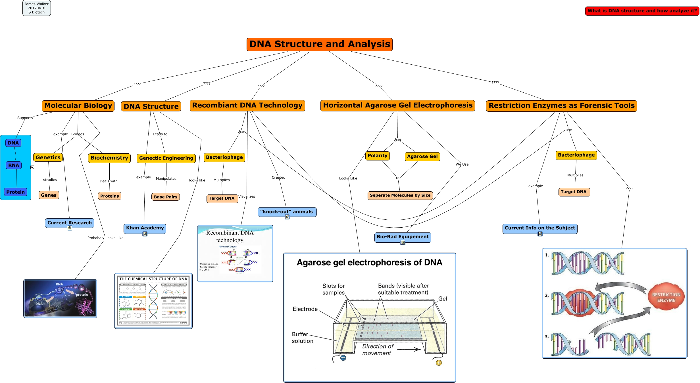

WARNING:
JavaScript is turned OFF. None of the links on this concept map will
work until it is reactivated.
If you need help turning JavaScript On, click here.
This Concept Map, created with IHMC CmapTools, has information related to: Chapter 4 Cmap.cmap, DNA Transcribes RNA, DNA Structure Leads to Genectic Engineering, Bacteriophage Multiplies Target DNA, Restriction Enzymes as Forensic Tools Use Bacteriophage, Recombiant DNA Technology Use Bacteriophage, Molecular Biology example Current Research, Molecular Biology Bridges Genetics, Restriction Enzymes as Forensic Tools example Current Info on the Subject, Horizontal Agarose Gel Electrophoresis We Use Bio-Rad Equipement, Horizontal Agarose Gel Electrophoresis Uses Agarose Gel, Recombiant DNA Technology Created “knock-out” animals, RNA Converts to Protein, Agarose Gel to Seperate Molecules by Size, Genetics strudies Genes, DNA Structure and Analysis ???? Horizontal Agarose Gel Electrophoresis, Restriction Enzymes as Forensic Tools Use Bacteriophage, Polarity to Seperate Molecules by Size, Horizontal Agarose Gel Electrophoresis Uses Polarity, Molecular Biology Probabaly Looks Like, Recombiant DNA Technology Visualizes
